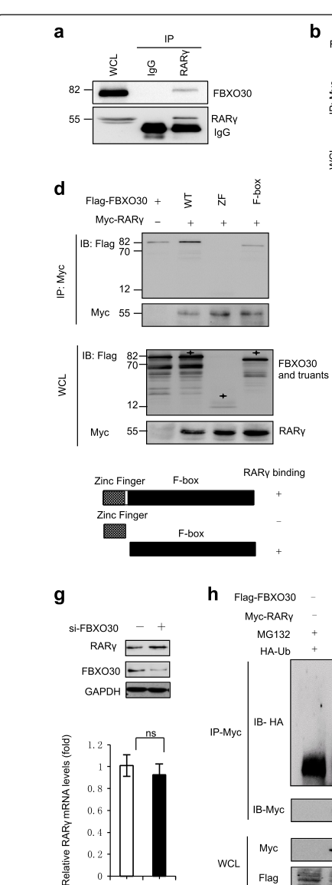

FBXO30 (F-box only protein 30) is a 745-residue F-box "other" (FBXO) protein that serves as a substrate-recognition component of an SCF (SKP1-CUL1-F-box protein)-type, cullin-RING ligase 1 (CRL1) E3 ubiquitin ligase complex. Its C-terminal F-box domain (residues 610-658) docks onto SKP1, which together with CUL1 and the RING protein RBX1/ROC1 assembles the catalytic ligase; the catalytic ubiquitin-transfer activity resides in the RBX1/RING subunit rather than in FBXO30 itself. The N-terminal region carries a TRAF-type zinc finger (residues 48-109) whose solution structure has been determined and which is predicted to coordinate zinc as a structural feature. Within the assembled SCF complex FBXO30 selects specific substrate proteins for polyubiquitination and subsequent proteasomal degradation, with substrates that appear strongly context- and tissue-dependent. In human cells FBXO30 is predominantly cytoplasmic and has been reported to ubiquitinate retinoic acid receptor gamma (RARG), linking retinoic-acid signaling to positive regulation of BMP signaling in neural-tube development, and to promote proteasomal degradation of HIF-1A under normoxia, acting as a candidate tumor suppressor in clear-cell renal cell carcinoma. Studies of the rodent ortholog identify additional substrates, including the mitotic kinesin Eg5/KIF11 (mammary epithelial proliferation and spindle/centrosome homeostasis) and the stem-loop binding protein SLBP (oocyte meiotic chromosome condensation and segregation), and show dynamic nuclear/cytoplasmic/spindle-associated localization through the cell and meiotic cycle. By similarity, FBXO30 has also been implicated in muscle atrophy following denervation. The protein is widely but lowly expressed, is itself subject to auto-ubiquitination and possible neddylation, and a dedicated SCF complex variant (ComplexPortal CPX-7968) is annotated. Although several candidate substrates have now been reported, individual substrate-pathway links remain based on single studies and FBXO30 is still relatively poorly characterized.
| GO Term | Evidence | Action | Reason |
|---|---|---|---|
|
GO:0008270
zinc ion binding
|
IEA
GO_REF:0000002 |
KEEP AS NON CORE |
Summary: Electronic (InterPro/keyword) assignment of zinc binding based on the N-terminal TRAF-type zinc finger (residues 48-109), which plausibly coordinates zinc as a structural feature.
Reason: The TRAF-type zinc finger plausibly binds zinc, but this is a structural attribute of one domain and is subsidiary to the protein's role as an SCF substrate-recognition adaptor; not a standalone core function.
Supporting Evidence:
file:human/FBXO30/FBXO30-uniprot.txt
ZN_FING 48..109
|
|
GO:0061630
ubiquitin protein ligase activity
|
IEA
GO_REF:0000002 |
MODIFY |
Summary: Electronic (InterPro) assignment of ubiquitin protein ligase activity. As an F-box protein, FBXO30 is the substrate-recognition adaptor of the SCF complex and is not the catalytic ligase; the ubiquitin-transfer activity resides in the RBX1/RING subunit. This is a common over-propagation of ligase activity onto F-box adaptors.
Reason: F-box proteins are substrate-recognition adaptors, not catalytic ligases; the catalytic activity resides in RBX1/RING. The substrate-adaptor activity term better captures FBXO30's molecular function.
Proposed replacements:
ubiquitin-like ligase-substrate adaptor activity
Supporting Evidence:
file:human/FBXO30/FBXO30-uniprot.txt
Substrate-recognition component of the SCF (SKP1-CUL1-F-box protein)-type E3 ubiquitin ligase complex.
|
|
GO:0005515
protein binding
|
IPI
PMID:28514442 Architecture of the human interactome defines protein commun... |
KEEP AS NON CORE |
Summary: High-throughput affinity-purification interactome (BioPlex) capturing the FBXO30-MYO6 interaction. Bare protein binding is uninformative per curation guidelines.
Reason: Records a real interactor (MYO6) detected in a large-scale interactome, but bare protein binding is uninformative and not a core function.
Supporting Evidence:
file:human/FBXO30/FBXO30-uniprot.txt
Q8TB52; Q9UM54: MYO6
|
|
GO:0005515
protein binding
|
IPI
PMID:33961781 Dual proteome-scale networks reveal cell-specific remodeling... |
KEEP AS NON CORE |
Summary: Cell-specific proteome-scale interactome (BioPlex) again capturing the FBXO30-MYO6 interaction. Bare protein binding is uninformative per curation guidelines.
Reason: Records the same MYO6 interaction from a high-throughput interactome; bare protein binding is uninformative and not a core function.
Supporting Evidence:
file:human/FBXO30/FBXO30-uniprot.txt
Q8TB52; Q9UM54: MYO6
|
|
GO:0016567
protein ubiquitination
|
IEA
GO_REF:0000041 |
KEEP AS NON CORE |
Summary: UniPathway-derived electronic assignment of the general protein ubiquitination process, a parent of the specific SCF-dependent ubiquitination/ proteasomal degradation process in which FBXO30 participates.
Reason: Correct but generic; the more specific GO:0031146 (SCF-dependent proteasomal ubiquitin-dependent protein catabolic process) better captures the biological role.
Supporting Evidence:
file:human/FBXO30/FBXO30-uniprot.txt
PATHWAY: Protein modification; protein ubiquitination.
|
|
GO:0019005
SCF ubiquitin ligase complex
|
NAS
PMID:34445249 The SCF Complex Is Essential to Maintain Genome and Chromoso... |
ACCEPT |
Summary: ComplexPortal (NAS) assignment that FBXO30 is part of an SCF (SKP1-CUL1-F-box) E3 ubiquitin ligase complex, the core cellular localization for an F-box substrate-recognition protein. A dedicated complex variant (CPX-7968) is annotated.
Reason: Core localization; FBXO30 assembles into the SCF complex via its F-box domain binding SKP1, consistent with UniProt and the dedicated ComplexPortal SCF FBXO30 variant.
Supporting Evidence:
file:human/FBXO30/FBXO30-uniprot.txt
Part of a SCF (SKP1-cullin-F-box) protein ligase complex.
|
|
GO:0031146
SCF-dependent proteasomal ubiquitin-dependent protein catabolic process
|
NAS
PMID:34445249 The SCF Complex Is Essential to Maintain Genome and Chromoso... |
ACCEPT |
Summary: ComplexPortal (NAS) assignment of the SCF-dependent proteasomal ubiquitin-dependent protein catabolic process, the core biological process for an SCF substrate-recognition receptor that targets substrates for proteasomal degradation.
Reason: Core biological process; as the substrate-recognition component of an SCF/CRL1 ligase, FBXO30 directs substrates into SCF-dependent proteasomal degradation. Falcon-sourced literature grounds this with specific reported substrates (human RARG and HIF-1A; mouse Eg5/KIF11 and SLBP), consistent with the functional placement of FBXO30 as an F-box/SCF (CRL1) substrate-recognition receptor; individual substrate-pathway links remain single-study and are not promoted to substrate-specific GO terms here.
Supporting Evidence:
file:human/FBXO30/FBXO30-uniprot.txt
Substrate-recognition component of the SCF (SKP1-CUL1-F-box protein)-type E3 ubiquitin ligase complex.
file:human/FBXO30/FBXO30-deep-research-falcon.md
Human work directly demonstrates FBXO30-mediated ubiquitylation of **RARγ** and proteasome-dependent regulation of **HIF-1α**
|
|
GO:0005829
cytosol
|
TAS
Reactome:R-HSA-8952618 |
KEEP AS NON CORE |
Summary: Reactome (TAS) cytosolic localization derived from a generic CRL1/ neddylation pathway reaction (AcM-UBE2M transfers NEDD8 to CRL1). Plausible but generic pathway-context localization.
Reason: Generic Reactome neddylation/CRL-cycle pathway location; plausible cytosolic localization but not specific to FBXO30 and subsidiary to the SCF complex annotation.
|
|
GO:0005829
cytosol
|
TAS
Reactome:R-HSA-8952620 |
KEEP AS NON CORE |
Summary: Reactome (TAS) cytosolic localization derived from a generic CRL1/ neddylation pathway reaction (NEDD8:AcM-UBE2M binds CRL1). Plausible but generic pathway-context localization.
Reason: Generic Reactome neddylation/CRL-cycle pathway location; plausible cytosolic localization but not specific to FBXO30 and subsidiary to the SCF complex annotation.
|
|
GO:0005829
cytosol
|
TAS
Reactome:R-HSA-8955241 |
KEEP AS NON CORE |
Summary: Reactome (TAS) cytosolic localization derived from a generic CRL cycle reaction (CAND1 binds cytosolic CRL E3 ligases). Plausible but generic pathway-context localization.
Reason: Generic Reactome neddylation/CRL-cycle pathway location; plausible cytosolic localization but not specific to FBXO30 and subsidiary to the SCF complex annotation.
|
|
GO:0005829
cytosol
|
TAS
Reactome:R-HSA-8955289 |
KEEP AS NON CORE |
Summary: Reactome (TAS) cytosolic localization derived from a generic CRL cycle reaction (COMMDs displace CAND1 from cytosolic CRL complexes). Plausible but generic pathway-context localization.
Reason: Generic Reactome neddylation/CRL-cycle pathway location; plausible cytosolic localization but not specific to FBXO30 and subsidiary to the SCF complex annotation.
|
|
GO:0005829
cytosol
|
TAS
Reactome:R-HSA-8956040 |
KEEP AS NON CORE |
Summary: Reactome (TAS) cytosolic localization derived from a generic CRL cycle reaction (COP9 signalosome deneddylates cytosolic CRL complexes). Plausible but generic pathway-context localization.
Reason: Generic Reactome neddylation/CRL-cycle pathway location; plausible cytosolic localization but not specific to FBXO30 and subsidiary to the SCF complex annotation.
|
|
GO:0005829
cytosol
|
TAS
Reactome:R-HSA-8956200 |
KEEP AS NON CORE |
Summary: Reactome (TAS) cytosolic localization derived from a generic CRL1 reaction (MyrG-DCUN1D3 binds CRL1 complex). Plausible but generic pathway-context localization.
Reason: Generic Reactome neddylation/CRL-cycle pathway location; plausible cytosolic localization but not specific to FBXO30 and subsidiary to the SCF complex annotation.
|
|
GO:0005829
cytosol
|
TAS
Reactome:R-HSA-983140 |
KEEP AS NON CORE |
Summary: Reactome (TAS) cytosolic localization derived from a generic ubiquitination reaction (transfer of Ub from E2 to substrate). Plausible but generic pathway-context localization.
Reason: Generic Reactome neddylation/CRL-cycle pathway location; plausible cytosolic localization but not specific to FBXO30 and subsidiary to the SCF complex annotation.
|
|
GO:0005829
cytosol
|
TAS
Reactome:R-HSA-983147 |
KEEP AS NON CORE |
Summary: Reactome (TAS) cytosolic localization derived from a generic ubiquitination reaction (release of E3 from polyubiquitinated substrate). Plausible but generic pathway-context localization.
Reason: Generic Reactome neddylation/CRL-cycle pathway location; plausible cytosolic localization but not specific to FBXO30 and subsidiary to the SCF complex annotation.
|
|
GO:0005829
cytosol
|
TAS
Reactome:R-HSA-983156 |
KEEP AS NON CORE |
Summary: Reactome (TAS) cytosolic localization derived from a generic ubiquitination reaction (polyubiquitination of substrate). Plausible but generic pathway-context localization.
Reason: Generic Reactome neddylation/CRL-cycle pathway location; plausible cytosolic localization but not specific to FBXO30 and subsidiary to the SCF complex annotation.
|
|
GO:0005829
cytosol
|
TAS
Reactome:R-HSA-983157 |
KEEP AS NON CORE |
Summary: Reactome (TAS) cytosolic localization derived from a generic ubiquitination reaction (interaction of E3 with substrate and E2-Ub complex). Plausible but generic pathway-context localization.
Reason: Generic Reactome neddylation/CRL-cycle pathway location; plausible cytosolic localization but not specific to FBXO30 and subsidiary to the SCF complex annotation.
|
Q: Are the reported FBXO30 substrates (human RARG and HIF-1A; mouse Eg5/KIF11 and SLBP) bona fide direct SCF(FBXO30) substrates in human cells, and do they reflect a unified molecular activity or genuinely context- and tissue-dependent substrate repertoires? Is the high-throughput interactor MYO6 a substrate?
Q: Does the same substrate-recognition activity underlie FBXO30's distinct reported roles (BMP/retinoic-acid signaling in neural-tube development, HIF-1A turnover and tumor suppression in renal carcinoma, mitotic/meiotic spindle and chromosome homeostasis), and how is its dynamic nuclear/cytoplasmic/spindle localization regulated through the cell and meiotic cycle?
Q: Is the reported role of FBXO30 in muscle atrophy following denervation a direct consequence of its SCF substrate-recognition activity, and which substrate mediates it?
Experiment: Identify FBXO30 SCF substrates by affinity purification or proximity labeling coupled to quantitative proteomics, comparing wild-type versus F-box-deleted FBXO30 and proteasome-inhibited cells to enrich for stabilized substrates, and test the reported substrates (RARG, HIF-1A, Eg5/KIF11, SLBP) for direct, F-box/SKP1-dependent ubiquitination.
Experiment: Validate physical incorporation of FBXO30 into the SCF complex by co-immunoprecipitation / reconstitution of SKP1, CUL1 and RBX1 binding, and test F-box-domain mutants to confirm the SKP1-dependent adaptor interaction.
Experiment: Determine FBXO30 subcellular localization across the cell and meiotic cycle (live-cell imaging, fractionation) and correlate cytoplasmic versus spindle/nuclear pools with degradation of specific substrates (e.g. RARG vs Eg5).
The research report should be a detailed narrative explaining the function, biological processes, and localization of the gene product. Citations should be given for all claims.
You should prioritize authoritative reviews and primary scientific literature when conducting research. You can supplement
this with annotations you find in gene/protein databases, but these can be outdated or inaccurate.
We are specifically interested in the primary function of the gene - for enzymes, what reaction is catalyzed, and what is the substrate specificity? For transporters, what is the substrate? For structural proteins or adapters, what is the broader structural role? For signaling molecules, what is the role in the pathway.
We are interested in where in or outside the cell the gene product carries out its function.
We are also interested in the signaling or biochemical pathways in which the gene functions. We are less interested in broad pleiotropic effects, except where these elucidate the precise role.
Include evidence where possible. We are interested in both experimental evidence as well as inference from structure, evolution, or bioinformatic analysis. Precise studies should be prioritized over high-throughput, where available.
The gene symbol FBXO30 corresponds to F-box only protein 30 (synonym FBX30) in Homo sapiens, consistent with the human experimental literature that explicitly studies “FBXO30/F-box protein 30” as an F-box–containing ubiquitin-ligase component. In a human mechanistic study, FBXO30 was mapped to contain an F-box domain (aa 373–409) and a zinc-finger domain (aa 48–109), matching the domain expectations for an F-box substrate receptor with additional protein–protein interaction motifs (cheng2019fboxproteinfbxo30 pages 4-7).
F-box proteins are substrate-recognition modules within SKP1–CUL1–F-box (SCF) E3 ubiquitin ligase complexes. SCF/CRL architecture typically includes a cullin scaffold (e.g., CUL1) and ROC1/RBX1 to recruit the ubiquitin-charged E2 enzyme, while the F-box protein provides substrate specificity (fischer2023identificationofhypertrophymodulating pages 1-2). This conceptual framework is essential for interpreting FBXO30: it is not an enzyme that catalyzes a small-molecule reaction; rather, it confers target specificity for ubiquitylation leading to proteasomal degradation.
Across human and mouse experimental systems, the evidence supports FBXO30 as an SCF-type F-box adaptor/E3 ligase component that promotes ubiquitin-dependent, proteasome-mediated turnover of specific protein substrates in a context- and tissue-dependent manner. Human work directly demonstrates FBXO30-mediated ubiquitylation of RARγ and proteasome-dependent regulation of HIF-1α (cheng2019fboxproteinfbxo30 pages 4-7, yuan2023fbxo30functionsas pages 4-6).
In human cells, FBXO30 contains:
- Zinc finger domain (aa 48–109)
- F-box domain (aa 373–409)
These features were experimentally used for interaction mapping with RARγ (cheng2019fboxproteinfbxo30 pages 4-7) and are also shown in the extracted figure panel(s) (cheng2019fboxproteinfbxo30 media aa47de8f).
A human study reports FBXO30 is predominantly cytoplasmic, and FBXO30 and RARγ show cytoplasmic colocalization by immunofluorescence (cheng2019fboxproteinfbxo30 pages 4-7). In mouse oocytes, Fbxo30 displays dynamic localization: nuclear at GV stage, then cytoplasmic with enrichment around chromosomes after GVBD, and spindle-associated at Pro-MI/MI (jin2019fbxo30regulateschromosome pages 4-6, jin2019fbxo30regulateschromosome pages 1-2). These observations are consistent with a protein whose functional localization depends on cellular state and substrate.
| Evidence type | Molecular role | Validated substrates | Pathway/process | Subcellular localization | Key quantitative findings | Diseases/phenotypes | Primary reference (year) | DOI URL |
|---|---|---|---|---|---|---|---|---|
| Human; in vitro (HEK293, NT2/D1), human fetal tissue | F-box protein functioning as E3 ubiquitin ligase/SCF-type substrate adaptor for proteasomal turnover | RARγ | RA/RARγ-BMP signaling; positive regulation of BMP signaling via RARγ degradation | Predominantly cytoplasmic; cytoplasmic colocalization with RARγ; domains mapped: zinc finger aa48-109, F-box aa373-409 | RARγ half-life ~4 h; FBXO30 knockdown RNA-seq: 86 upregulated and 78 downregulated genes; positive correlation with ID2 r=0.672 (p<0.05); negative correlation with chordin r=-0.515 (p<0.05); NanoString n=10; some WB n=3; human NTD retinoid values reported up to ~9.31 ng/mg in anencephaly vs up to ~3.70 ng/mg in controls (cheng2019fboxproteinfbxo30 pages 4-7, cheng2019fboxproteinfbxo30 pages 11-14, cheng2019fboxproteinfbxo30 media aa47de8f) | Neural tube defects; aberrant FBXO30 levels/downregulation in high-retinol NTD samples; reduced BMP target gene expression (cheng2019fboxproteinfbxo30 pages 1-2, cheng2019fboxproteinfbxo30 pages 4-7, cheng2019fboxproteinfbxo30 pages 11-14) | Cheng et al. (2019) (cheng2019fboxproteinfbxo30 pages 1-2, cheng2019fboxproteinfbxo30 pages 4-7) | https://doi.org/10.1038/s41419-019-1783-y |
| Human; in vitro and in vivo (ccRCC cell lines, xenograft/metastasis models), human tumor cohorts | F-box protein in SCF-type E3 ligase complexes; tumor-suppressive E3 ligase promoting proteasome-dependent HIF-1α degradation in hZIP1/Zn2+-dependent axis | HIF-1α | Hypoxia/HIF-1α regulation; hZIP1/Zn2+/FBXO30/HIF-1α axis | Not established in gathered 2023 ccRCC evidence | TCGA analyses used 533 ccRCC vs 72 adjacent normal tissues in one report; another excerpt reports 253 renal cancer tissues vs 72 normal tissues; clinical validation included 20 paired tumors for WB and 24 paired tumors for RT-qPCR; xenograft n=5/group; lung metastasis assay n=3/group; higher FBXO30 associated with better overall survival using 50% cutoff (yuan2023fbxo30functionsas pages 3-4, yuan2023fbxo30functionsas pages 4-6, yuan2023fbxo30functionsas pages 1-2) | Clear cell renal cell carcinoma; FBXO30 downregulated with higher grade/stage; FBXO30 overexpression suppresses proliferation, invasion, EMT, tumorigenesis, metastasis (yuan2023fbxo30functionsas pages 3-4, yuan2023fbxo30functionsas pages 4-6) | Yuan et al. (2023) (yuan2023fbxo30functionsas pages 3-4, yuan2023fbxo30functionsas pages 4-6, yuan2023fbxo30functionsas pages 1-2) | https://doi.org/10.3892/ijo.2023.5488 |
| Mouse; in vivo mammary gland plus biochemical/cell-based assays | SCF adaptor/E3 ligase component; binds SKP1 and CUL1 and ubiquitinates substrate | Eg5/KIF11 | Mitosis, centrosome homeostasis, spindle assembly, mammopoiesis | Not established in gathered excerpts | Mass spectrometry identified 7 unique EG5 peptides; co-IP recovered EG5, SKP1, CUL1; Eg5-binding region mapped to C-terminus likely aa812-1052; rescue of Fbxo30-/- defects by shRNA or EG5 inhibitor demonstrated functional specificity (liu2016fbxo30regulatesmammopoiesis pages 1-3, liu2016fbxo30regulatesmammopoiesis pages 3-4, liu2016fbxo30regulatesmammopoiesis pages 16-20) | Mammary gland developmental defects; impaired mammary stem/progenitor function; centrosome and spindle abnormalities when Fbxo30 lost (liu2016fbxo30regulatesmammopoiesis pages 1-3, liu2016fbxo30regulatesmammopoiesis pages 16-20) | Liu et al. (2016) (liu2016fbxo30regulatesmammopoiesis pages 1-3, liu2016fbxo30regulatesmammopoiesis pages 3-4, liu2016fbxo30regulatesmammopoiesis pages 16-20) | https://doi.org/10.1016/j.celrep.2016.03.083 |
| Mouse; oocyte RNAi, proteomics, immunofluorescence, transfected cells | F-box protein/SCF-family substrate selector promoting ubiquitin-proteasome turnover | SLBP | Oocyte meiosis; chromosome condensation/segregation via SLBP-histone H3 control | Nuclear at GV; cytoplasmic after GVBD with enrichment around chromosomes; spindle-associated at Pro-MI/MI; minimal at MII (jin2019fbxo30regulateschromosome pages 4-6, jin2019fbxo30regulateschromosome pages 1-2) | iTRAQ used 3000 MI oocytes/group; 238 Fbxo30-associated proteins identified; 13 unique SLBP peptides detected; MG132 4 μM for 6 h used in ubiquitination/proteasome assays (jin2019fbxo30regulateschromosome pages 4-6, jin2019fbxo30regulateschromosome pages 2-4) | Meiotic arrest, failure of polar body extrusion, chromosome overcondensation and segregation defects after Fbxo30 depletion; rescue by SLBP knockdown (jin2019fbxo30regulateschromosome pages 4-6, jin2019fbxo30regulateschromosome pages 2-4, jin2019fbxo30regulateschromosome pages 1-2) | Jin et al. (2019) (jin2019fbxo30regulateschromosome pages 4-6, jin2019fbxo30regulateschromosome pages 2-4, jin2019fbxo30regulateschromosome pages 1-2) | https://doi.org/10.1007/s00018-019-03038-z |
| Cross-source synthesis: human primary evidence plus mouse functional orthology | Overall current annotation: substrate-recognition F-box protein in SCF/CUL1-RING ubiquitin ligase complexes, with context-dependent substrates rather than enzymatic small-molecule catalysis | Human: RARγ, HIF-1α; Mouse: Eg5/KIF11, SLBP | Developmental signaling (RA/BMP), hypoxia signaling, mitotic control, chromosome segregation | Context-dependent; cytoplasmic in human RARγ study; spindle/chromosome-associated in mouse oocytes (cheng2019fboxproteinfbxo30 pages 4-7, jin2019fbxo30regulateschromosome pages 4-6, jin2019fbxo30regulateschromosome pages 1-2) | Recent review notes many F-box proteins in spermatogenesis remain incompletely defined; for FBXO30, mechanistic evidence is still substrate- and tissue-specific rather than system-wide (OpenTargets Search: -FBXO30) | Disease links supported in Open Targets include neural tube defect and nonpapillary renal cell carcinoma, but evidence base is limited and literature-driven rather than genetically definitive (OpenTargets Search: -FBXO30) | Open Targets / literature-supported synthesis (2024 update context) (OpenTargets Search: -FBXO30) | https://platform.opentargets.org/target/ENSG00000118496 |
Table: This table summarizes experimentally supported functional annotation for human FBXO30 (UniProt Q8TB52) and the most relevant orthologous mouse evidence. It organizes validated substrates, pathways, localization, quantitative findings, and disease links so the evidence base can be assessed at a glance.
Mechanism (human cells): FBXO30 interacts with retinoic acid receptor γ (RARγ) (identified by IP/MS and validated by co-IP) and promotes ubiquitylation of RARγ (cheng2019fboxproteinfbxo30 pages 4-7). Truncation mapping indicates the F-box domain is necessary/sufficient for the FBXO30–RARγ interaction (cheng2019fboxproteinfbxo30 pages 4-7); the domain schematic and mapping are visible in the extracted figure region (cheng2019fboxproteinfbxo30 media aa47de8f).
Pathway consequence: The study positions FBXO30 as a positive regulator of BMP signaling by destabilizing RARγ, thereby modulating RA-mediated suppression of BMP outputs (cheng2019fboxproteinfbxo30 pages 4-7, cheng2019fboxproteinfbxo30 pages 1-2). BMP pathway readouts (e.g., BRE reporter activity, p-Smad1/5) and RARγ ubiquitylation assays are shown in the extracted figures (cheng2019fboxproteinfbxo30 media aa47de8f, cheng2019fboxproteinfbxo30 media 665338cd, cheng2019fboxproteinfbxo30 media 0fad8d55).
Quantitative data: RARγ is described as a short-lived protein with ~4 h half-life (cheng2019fboxproteinfbxo30 pages 4-7). RNA-seq after FBXO30 depletion identified 86 upregulated and 78 downregulated genes (cheng2019fboxproteinfbxo30 pages 4-7). In NTD-associated tissue analyses, correlations with BMP-related genes included FBXO30–ID2 r = 0.672 (p < 0.05) and FBXO30–chordin r = −0.515 (p < 0.05) (cheng2019fboxproteinfbxo30 pages 11-14).
Human disease/tissue evidence: FBXO30 protein was reported as significantly downregulated in human fetal brain tissue from neural tube defect (NTD) cases relative to controls (cheng2019fboxproteinfbxo30 pages 4-7). A clinical table in the same study reports higher retinoid values in anencephaly samples (up to ~9.31 ng/mg) compared with controls (up to ~3.70 ng/mg) (cheng2019fboxproteinfbxo30 pages 11-14), and this table is present in the extracted visual content (cheng2019fboxproteinfbxo30 media aa47de8f, cheng2019fboxproteinfbxo30 media eab6c99f).
Interpretation: The most direct mechanistic chain supported by experimental evidence is: retinoid/RA exposure → reduced FBXO30 levels → altered RARγ stability → altered BMP signaling outputs, which provides a plausible molecular link between environmental vitamin A derivatives and developmental signaling defects (cheng2019fboxproteinfbxo30 pages 1-2, cheng2019fboxproteinfbxo30 pages 11-14).
A 2023 study in clear cell renal cell carcinoma (ccRCC) reports that FBXO30 mediates ubiquitination and proteasomal degradation of HIF‑1α under normoxia, functioning as a tumor suppressor in their models (yuan2023fbxo30functionsas pages 4-6, yuan2023fbxo30functionsas pages 1-2).
Cohorts and models (quantitative details):
- TCGA-level comparisons described include 533 ccRCC vs 72 adjacent normal tissues in one excerpted analysis (yuan2023fbxo30functionsas pages 3-4) and 253 renal cancer tissues vs 72 normal tissues in another excerpt (yuan2023fbxo30functionsas pages 4-6).
- Clinical validation included 20 paired ccRCC/adjacent tissues by western blot and 24 paired samples by RT-qPCR (yuan2023fbxo30functionsas pages 4-6).
- In vivo assays reported n=5 mice/group for subcutaneous xenografts and n=3 mice/group for lung metastasis models (yuan2023fbxo30functionsas pages 3-4).
Mechanistic evidence: FBXO30 altered HIF‑1α at the protein (not mRNA) level, and the proteasome inhibitor MG132 reversed FBXO30’s negative regulation, consistent with proteasome-dependent turnover (yuan2023fbxo30functionsas pages 4-6). The paper proposes an upstream hZIP1/Zn2+ regulation of FBXO30 and HIF‑1α (yuan2023fbxo30functionsas pages 1-2).
Interpretation and limitations: The study provides a coherent E3-ligase mechanism in a specific tumor context but, in the retrieved excerpts, does not provide hazard ratios or detailed effect-size statistics beyond survival stratification and experimental sample sizes (yuan2023fbxo30functionsas pages 4-6).
Although the user’s target is the human protein, mechanistic studies of the mouse ortholog provide strong biochemical evidence for SCF assembly and substrate specificity that plausibly generalizes to the human protein family member.
Eg5/KIF11 (mitosis; mammopoiesis): In a mouse study, Fbxo30 physically associates with Skp1 and Cul1 and targets the mitotic kinesin Eg5/KIF11 for ubiquitin-dependent regulation. Mass spectrometry recovered SCF components and Eg5 peptides; co-IPs and in vitro ubiquitination assays support Eg5 as a substrate; and genetic/chemical normalization of Eg5 activity rescued mammary epithelial proliferation and mammopoiesis defects in Fbxo30−/− mice (liu2016fbxo30regulatesmammopoiesis pages 3-4, liu2016fbxo30regulatesmammopoiesis pages 16-20).
SLBP (chromosome segregation; oocyte meiosis): Another mouse study identified SLBP as an Fbxo30-associated protein by IP-MS, with 13 unique peptides detected; depletion of Fbxo30 caused meiotic arrest and chromosome segregation defects that were rescued by SLBP knockdown, consistent with SLBP being a functional substrate (jin2019fbxo30regulateschromosome pages 4-6, jin2019fbxo30regulateschromosome pages 2-4, jin2019fbxo30regulateschromosome pages 1-2).
The clearest 2023 advance specific to FBXO30 is the ccRCC mechanism implicating FBXO30 in HIF‑1α degradation and tumor suppression phenotypes across in vitro assays and mouse xenograft/metastasis models, supported by patient-tissue comparisons (yuan2023fbxo30functionsas pages 3-4, yuan2023fbxo30functionsas pages 4-6).
A 2023 functional genomics screen of Cullin-RING ligase components in neonatal rat cardiomyocytes identified Fbxo30 as a hit where siRNA depletion increased cardiomyocyte cell size under basal conditions, suggesting a negative regulatory role in hypertrophy pathways (fischer2023identificationofhypertrophymodulating pages 1-2, fischer2023identificationofhypertrophymodulating pages 6-8). The paper provides expert caveats common to CRL screens (e.g., limited mechanistic data for many F-box proteins and expression–function disconnects), which is relevant for interpreting FBXO30 as under-characterized outside a few substrate-defined contexts (fischer2023identificationofhypertrophymodulating pages 6-8).
A 2024 review of F-box proteins in spermatogenesis provides broader SCF context and highlights that many F-box proteins remain incompletely characterized at the substrate level; however, in the retrieved excerpt it does not directly discuss FBXO30 (xuan2024theemergingand pages 11-12). This underscores a field-wide gap: FBXO30 currently has few well-validated substrates compared with prominent F-box proteins (xuan2024theemergingand pages 11-12).
In general, SCF-type E3 ligase components are increasingly viewed as druggable nodes (e.g., via ligase-substrate interaction disruption or targeted protein degradation approaches). However, no direct FBXO30-targeting therapeutic modality was identified in the retrieved 2023–2024 literature set; current evidence best supports FBXO30 as a biologically relevant node with context-dependent substrates rather than an established drug target.
Open Targets (target ENSG00000118496) lists associations (each showing 3 evidences in the extract) with neoplasm, nonpapillary renal cell carcinoma, neural tube defect, hair color, and abnormality of the skeletal system, supported by literature (Europe PMC) and GWAS credible sets. Two key supporting references in the Open Targets extract are PubMed 31320612 (2019; PMCID PMC6639381) and PubMed 36799168 (2023; PMCID PMC9946804), corresponding to the mechanistic NTD and ccRCC evidence base; the association scores shown are modest (e.g., neoplasm ~0.088; nonpapillary RCC ~0.074; neural tube defect ~0.058; skeletal system abnormality ~0.133) (OpenTargets Search: -FBXO30).
The best-supported primary function of human FBXO30 (Q8TB52) is as an F-box substrate-recognition component of an SCF/CUL1-type E3 ubiquitin ligase, mediating ubiquitylation and proteasome-dependent degradation of specific substrates. Two human substrates have direct mechanistic evidence in the retrieved corpus: RARγ (linking retinoic acid signaling to BMP pathway outputs in development/NTD) and HIF‑1α (tumor biology in ccRCC, including a proposed hZIP1/Zn2+ upstream axis). Mouse ortholog studies extend mechanistic breadth, identifying Eg5/KIF11 and SLBP as context-specific substrates involved in mitosis/mammopoiesis and oocyte chromosome segregation, respectively, and provide direct biochemical evidence for SCF assembly (cheng2019fboxproteinfbxo30 pages 4-7, yuan2023fbxo30functionsas pages 4-6, liu2016fbxo30regulatesmammopoiesis pages 16-20, jin2019fbxo30regulateschromosome pages 2-4).
References
(cheng2019fboxproteinfbxo30 pages 4-7): Xiyue Cheng, Pei Pei, Juan Yu, Qin Zhang, Dan Li, Xiaolu Xie, Jianxin Wu, Shan Wang, and Ting Zhang. F-box protein fbxo30 mediates retinoic acid receptor γ ubiquitination and regulates bmp signaling in neural tube defects. Cell Death & Disease, Jul 2019. URL: https://doi.org/10.1038/s41419-019-1783-y, doi:10.1038/s41419-019-1783-y. This article has 30 citations and is from a peer-reviewed journal.
(fischer2023identificationofhypertrophymodulating pages 1-2): Maximillian Fischer, Moritz Jakab, Marc N. Hirt, Tessa R. Werner, Stefan Engelhardt, and Antonio Sarikas. Identification of hypertrophy-modulating cullin-ring ubiquitin ligases in primary cardiomyocytes. Frontiers in Physiology, Mar 2023. URL: https://doi.org/10.3389/fphys.2023.1134339, doi:10.3389/fphys.2023.1134339. This article has 5 citations.
(yuan2023fbxo30functionsas pages 4-6): Yulin Yuan, Zimeng Liu, Bohan Li, Zheng Gong, Chiyuan Piao, Zhuonan Liu, Zhe Zhang, and Xiao Dong. Fbxo30 functions as a tumor suppressor and an e3 ubiquitin ligase for hzip1-mediated hif-1α degradation in renal cell carcinoma. International Journal of Oncology, Feb 2023. URL: https://doi.org/10.3892/ijo.2023.5488, doi:10.3892/ijo.2023.5488. This article has 8 citations and is from a peer-reviewed journal.
(cheng2019fboxproteinfbxo30 media aa47de8f): Xiyue Cheng, Pei Pei, Juan Yu, Qin Zhang, Dan Li, Xiaolu Xie, Jianxin Wu, Shan Wang, and Ting Zhang. F-box protein fbxo30 mediates retinoic acid receptor γ ubiquitination and regulates bmp signaling in neural tube defects. Cell Death & Disease, Jul 2019. URL: https://doi.org/10.1038/s41419-019-1783-y, doi:10.1038/s41419-019-1783-y. This article has 30 citations and is from a peer-reviewed journal.
(jin2019fbxo30regulateschromosome pages 4-6): Yimei Jin, Mo Yang, Chang Gao, Wei Yue, Xiaoling Liang, Bingteng Xie, Xiaohui Zhu, Shangrong Fan, Rong Li, and Mo Li. Fbxo30 regulates chromosome segregation of oocyte meiosis. Cellular and Molecular Life Sciences, 76:2217-2229, Apr 2019. URL: https://doi.org/10.1007/s00018-019-03038-z, doi:10.1007/s00018-019-03038-z. This article has 26 citations and is from a domain leading peer-reviewed journal.
(jin2019fbxo30regulateschromosome pages 1-2): Yimei Jin, Mo Yang, Chang Gao, Wei Yue, Xiaoling Liang, Bingteng Xie, Xiaohui Zhu, Shangrong Fan, Rong Li, and Mo Li. Fbxo30 regulates chromosome segregation of oocyte meiosis. Cellular and Molecular Life Sciences, 76:2217-2229, Apr 2019. URL: https://doi.org/10.1007/s00018-019-03038-z, doi:10.1007/s00018-019-03038-z. This article has 26 citations and is from a domain leading peer-reviewed journal.
(cheng2019fboxproteinfbxo30 pages 11-14): Xiyue Cheng, Pei Pei, Juan Yu, Qin Zhang, Dan Li, Xiaolu Xie, Jianxin Wu, Shan Wang, and Ting Zhang. F-box protein fbxo30 mediates retinoic acid receptor γ ubiquitination and regulates bmp signaling in neural tube defects. Cell Death & Disease, Jul 2019. URL: https://doi.org/10.1038/s41419-019-1783-y, doi:10.1038/s41419-019-1783-y. This article has 30 citations and is from a peer-reviewed journal.
(cheng2019fboxproteinfbxo30 pages 1-2): Xiyue Cheng, Pei Pei, Juan Yu, Qin Zhang, Dan Li, Xiaolu Xie, Jianxin Wu, Shan Wang, and Ting Zhang. F-box protein fbxo30 mediates retinoic acid receptor γ ubiquitination and regulates bmp signaling in neural tube defects. Cell Death & Disease, Jul 2019. URL: https://doi.org/10.1038/s41419-019-1783-y, doi:10.1038/s41419-019-1783-y. This article has 30 citations and is from a peer-reviewed journal.
(yuan2023fbxo30functionsas pages 3-4): Yulin Yuan, Zimeng Liu, Bohan Li, Zheng Gong, Chiyuan Piao, Zhuonan Liu, Zhe Zhang, and Xiao Dong. Fbxo30 functions as a tumor suppressor and an e3 ubiquitin ligase for hzip1-mediated hif-1α degradation in renal cell carcinoma. International Journal of Oncology, Feb 2023. URL: https://doi.org/10.3892/ijo.2023.5488, doi:10.3892/ijo.2023.5488. This article has 8 citations and is from a peer-reviewed journal.
(yuan2023fbxo30functionsas pages 1-2): Yulin Yuan, Zimeng Liu, Bohan Li, Zheng Gong, Chiyuan Piao, Zhuonan Liu, Zhe Zhang, and Xiao Dong. Fbxo30 functions as a tumor suppressor and an e3 ubiquitin ligase for hzip1-mediated hif-1α degradation in renal cell carcinoma. International Journal of Oncology, Feb 2023. URL: https://doi.org/10.3892/ijo.2023.5488, doi:10.3892/ijo.2023.5488. This article has 8 citations and is from a peer-reviewed journal.
(liu2016fbxo30regulatesmammopoiesis pages 1-3): Yan Liu, Yin Wang, Zhanwen Du, Xiaoli Yan, Pan Zheng, and Yang Liu. Fbxo30 regulates mammopoiesis by targeting the bipolar mitotic kinesin eg5. Cell reports, 15 5:1111-1122, May 2016. URL: https://doi.org/10.1016/j.celrep.2016.03.083, doi:10.1016/j.celrep.2016.03.083. This article has 15 citations and is from a highest quality peer-reviewed journal.
(liu2016fbxo30regulatesmammopoiesis pages 3-4): Yan Liu, Yin Wang, Zhanwen Du, Xiaoli Yan, Pan Zheng, and Yang Liu. Fbxo30 regulates mammopoiesis by targeting the bipolar mitotic kinesin eg5. Cell reports, 15 5:1111-1122, May 2016. URL: https://doi.org/10.1016/j.celrep.2016.03.083, doi:10.1016/j.celrep.2016.03.083. This article has 15 citations and is from a highest quality peer-reviewed journal.
(liu2016fbxo30regulatesmammopoiesis pages 16-20): Yan Liu, Yin Wang, Zhanwen Du, Xiaoli Yan, Pan Zheng, and Yang Liu. Fbxo30 regulates mammopoiesis by targeting the bipolar mitotic kinesin eg5. Cell reports, 15 5:1111-1122, May 2016. URL: https://doi.org/10.1016/j.celrep.2016.03.083, doi:10.1016/j.celrep.2016.03.083. This article has 15 citations and is from a highest quality peer-reviewed journal.
(jin2019fbxo30regulateschromosome pages 2-4): Yimei Jin, Mo Yang, Chang Gao, Wei Yue, Xiaoling Liang, Bingteng Xie, Xiaohui Zhu, Shangrong Fan, Rong Li, and Mo Li. Fbxo30 regulates chromosome segregation of oocyte meiosis. Cellular and Molecular Life Sciences, 76:2217-2229, Apr 2019. URL: https://doi.org/10.1007/s00018-019-03038-z, doi:10.1007/s00018-019-03038-z. This article has 26 citations and is from a domain leading peer-reviewed journal.
(OpenTargets Search: -FBXO30): Open Targets Query (-FBXO30, 5 results). Buniello, A. et al. (2025). Open Targets Platform: facilitating therapeutic hypotheses building in drug discovery. Nucleic Acids Research.
(cheng2019fboxproteinfbxo30 media 665338cd): Xiyue Cheng, Pei Pei, Juan Yu, Qin Zhang, Dan Li, Xiaolu Xie, Jianxin Wu, Shan Wang, and Ting Zhang. F-box protein fbxo30 mediates retinoic acid receptor γ ubiquitination and regulates bmp signaling in neural tube defects. Cell Death & Disease, Jul 2019. URL: https://doi.org/10.1038/s41419-019-1783-y, doi:10.1038/s41419-019-1783-y. This article has 30 citations and is from a peer-reviewed journal.
(cheng2019fboxproteinfbxo30 media 0fad8d55): Xiyue Cheng, Pei Pei, Juan Yu, Qin Zhang, Dan Li, Xiaolu Xie, Jianxin Wu, Shan Wang, and Ting Zhang. F-box protein fbxo30 mediates retinoic acid receptor γ ubiquitination and regulates bmp signaling in neural tube defects. Cell Death & Disease, Jul 2019. URL: https://doi.org/10.1038/s41419-019-1783-y, doi:10.1038/s41419-019-1783-y. This article has 30 citations and is from a peer-reviewed journal.
(cheng2019fboxproteinfbxo30 media eab6c99f): Xiyue Cheng, Pei Pei, Juan Yu, Qin Zhang, Dan Li, Xiaolu Xie, Jianxin Wu, Shan Wang, and Ting Zhang. F-box protein fbxo30 mediates retinoic acid receptor γ ubiquitination and regulates bmp signaling in neural tube defects. Cell Death & Disease, Jul 2019. URL: https://doi.org/10.1038/s41419-019-1783-y, doi:10.1038/s41419-019-1783-y. This article has 30 citations and is from a peer-reviewed journal.
(fischer2023identificationofhypertrophymodulating pages 6-8): Maximillian Fischer, Moritz Jakab, Marc N. Hirt, Tessa R. Werner, Stefan Engelhardt, and Antonio Sarikas. Identification of hypertrophy-modulating cullin-ring ubiquitin ligases in primary cardiomyocytes. Frontiers in Physiology, Mar 2023. URL: https://doi.org/10.3389/fphys.2023.1134339, doi:10.3389/fphys.2023.1134339. This article has 5 citations.
(xuan2024theemergingand pages 11-12): Zhuang Xuan, Jun Ruan, Canquan Zhou, and Zhi-ming Li. The emerging and diverse roles of f-box proteins in spermatogenesis and male infertility. Cell Regeneration, Jun 2024. URL: https://doi.org/10.1186/s13619-024-00196-9, doi:10.1186/s13619-024-00196-9. This article has 5 citations.

UPS|E3 ubiquitin and UBL ligases|Cul1 substrate receptor|F-box|TRAF-type ZnF (aux domain IPR001293) ; PN-node mapping: group=mapped GO:1990756; subtype/type/branch=no_mapping; class=context_only (GO:0061630).This file is generated from the current PROTEOSTASIS phase-1 dossier and local gene-review artifacts. Edit the source review, PN mapping, or dossier rather than this generated note when correcting the underlying curation.
id: Q8TB52
gene_symbol: FBXO30
product_type: PROTEIN
status: COMPLETE
taxon:
id: NCBITaxon:9606
label: Homo sapiens
description: >-
FBXO30 (F-box only protein 30) is a 745-residue F-box "other" (FBXO) protein
that serves as a substrate-recognition component of an SCF (SKP1-CUL1-F-box
protein)-type, cullin-RING ligase 1 (CRL1) E3 ubiquitin ligase complex. Its
C-terminal F-box domain (residues 610-658) docks onto SKP1, which together
with CUL1 and the RING protein RBX1/ROC1 assembles the catalytic ligase; the
catalytic ubiquitin-transfer activity resides in the RBX1/RING subunit rather
than in FBXO30 itself. The N-terminal region carries a TRAF-type zinc finger
(residues 48-109) whose solution structure has been determined and which is
predicted to coordinate zinc as a structural feature. Within the assembled SCF
complex FBXO30 selects specific substrate proteins for polyubiquitination and
subsequent proteasomal degradation, with substrates that appear strongly
context- and tissue-dependent. In human cells FBXO30 is predominantly
cytoplasmic and has been reported to ubiquitinate retinoic acid receptor gamma
(RARG), linking retinoic-acid signaling to positive regulation of BMP signaling
in neural-tube development, and to promote proteasomal degradation of HIF-1A
under normoxia, acting as a candidate tumor suppressor in clear-cell renal cell
carcinoma. Studies of the rodent ortholog identify additional substrates,
including the mitotic kinesin Eg5/KIF11 (mammary epithelial proliferation and
spindle/centrosome homeostasis) and the stem-loop binding protein SLBP (oocyte
meiotic chromosome condensation and segregation), and show dynamic
nuclear/cytoplasmic/spindle-associated localization through the cell and meiotic
cycle. By similarity, FBXO30 has also been implicated in muscle atrophy
following denervation. The protein is widely but lowly expressed, is itself
subject to auto-ubiquitination and possible neddylation, and a dedicated SCF
complex variant (ComplexPortal CPX-7968) is annotated. Although several
candidate substrates have now been reported, individual substrate-pathway links
remain based on single studies and FBXO30 is still relatively poorly
characterized.
existing_annotations:
- term:
id: GO:0008270
label: zinc ion binding
evidence_type: IEA
original_reference_id: GO_REF:0000002
qualifier: enables
review:
summary: Electronic (InterPro/keyword) assignment of zinc binding based on the
N-terminal TRAF-type zinc finger (residues 48-109), which plausibly coordinates
zinc as a structural feature.
action: KEEP_AS_NON_CORE
reason: The TRAF-type zinc finger plausibly binds zinc, but this is a structural
attribute of one domain and is subsidiary to the protein's role as an SCF
substrate-recognition adaptor; not a standalone core function.
supported_by:
- reference_id: file:human/FBXO30/FBXO30-uniprot.txt
supporting_text: ZN_FING 48..109
- term:
id: GO:0061630
label: ubiquitin protein ligase activity
evidence_type: IEA
original_reference_id: GO_REF:0000002
qualifier: enables
review:
summary: Electronic (InterPro) assignment of ubiquitin protein ligase activity.
As an F-box protein, FBXO30 is the substrate-recognition adaptor of the SCF
complex and is not the catalytic ligase; the ubiquitin-transfer activity
resides in the RBX1/RING subunit. This is a common over-propagation of ligase
activity onto F-box adaptors.
action: MODIFY
reason: F-box proteins are substrate-recognition adaptors, not catalytic ligases;
the catalytic activity resides in RBX1/RING. The substrate-adaptor activity
term better captures FBXO30's molecular function.
proposed_replacement_terms:
- id: GO:1990756
label: ubiquitin-like ligase-substrate adaptor activity
supported_by:
- reference_id: file:human/FBXO30/FBXO30-uniprot.txt
supporting_text: Substrate-recognition component of the SCF (SKP1-CUL1-F-box
protein)-type E3 ubiquitin ligase complex.
- term:
id: GO:0005515
label: protein binding
evidence_type: IPI
original_reference_id: PMID:28514442
qualifier: enables
review:
summary: High-throughput affinity-purification interactome (BioPlex) capturing
the FBXO30-MYO6 interaction. Bare protein binding is uninformative per curation
guidelines.
action: KEEP_AS_NON_CORE
reason: Records a real interactor (MYO6) detected in a large-scale interactome,
but bare protein binding is uninformative and not a core function.
supported_by:
- reference_id: file:human/FBXO30/FBXO30-uniprot.txt
supporting_text: 'Q8TB52; Q9UM54: MYO6'
- term:
id: GO:0005515
label: protein binding
evidence_type: IPI
original_reference_id: PMID:33961781
qualifier: enables
review:
summary: Cell-specific proteome-scale interactome (BioPlex) again capturing the
FBXO30-MYO6 interaction. Bare protein binding is uninformative per curation
guidelines.
action: KEEP_AS_NON_CORE
reason: Records the same MYO6 interaction from a high-throughput interactome;
bare protein binding is uninformative and not a core function.
supported_by:
- reference_id: file:human/FBXO30/FBXO30-uniprot.txt
supporting_text: 'Q8TB52; Q9UM54: MYO6'
- term:
id: GO:0016567
label: protein ubiquitination
evidence_type: IEA
original_reference_id: GO_REF:0000041
qualifier: involved_in
review:
summary: UniPathway-derived electronic assignment of the general protein
ubiquitination process, a parent of the specific SCF-dependent ubiquitination/
proteasomal degradation process in which FBXO30 participates.
action: KEEP_AS_NON_CORE
reason: Correct but generic; the more specific GO:0031146 (SCF-dependent
proteasomal ubiquitin-dependent protein catabolic process) better captures
the biological role.
supported_by:
- reference_id: file:human/FBXO30/FBXO30-uniprot.txt
supporting_text: 'PATHWAY: Protein modification; protein ubiquitination.'
- term:
id: GO:0019005
label: SCF ubiquitin ligase complex
evidence_type: NAS
original_reference_id: PMID:34445249
qualifier: part_of
review:
summary: ComplexPortal (NAS) assignment that FBXO30 is part of an SCF
(SKP1-CUL1-F-box) E3 ubiquitin ligase complex, the core cellular localization
for an F-box substrate-recognition protein. A dedicated complex variant
(CPX-7968) is annotated.
action: ACCEPT
reason: Core localization; FBXO30 assembles into the SCF complex via its F-box
domain binding SKP1, consistent with UniProt and the dedicated ComplexPortal
SCF FBXO30 variant.
supported_by:
- reference_id: file:human/FBXO30/FBXO30-uniprot.txt
supporting_text: Part of a SCF (SKP1-cullin-F-box) protein ligase complex.
- term:
id: GO:0031146
label: SCF-dependent proteasomal ubiquitin-dependent protein catabolic process
evidence_type: NAS
original_reference_id: PMID:34445249
qualifier: involved_in
review:
summary: ComplexPortal (NAS) assignment of the SCF-dependent proteasomal
ubiquitin-dependent protein catabolic process, the core biological process
for an SCF substrate-recognition receptor that targets substrates for
proteasomal degradation.
action: ACCEPT
reason: Core biological process; as the substrate-recognition component of an
SCF/CRL1 ligase, FBXO30 directs substrates into SCF-dependent proteasomal
degradation. Falcon-sourced literature grounds this with specific reported
substrates (human RARG and HIF-1A; mouse Eg5/KIF11 and SLBP), consistent with
the functional placement of FBXO30 as an F-box/SCF (CRL1) substrate-recognition
receptor; individual substrate-pathway links remain single-study and are not
promoted to substrate-specific GO terms here.
supported_by:
- reference_id: file:human/FBXO30/FBXO30-uniprot.txt
supporting_text: Substrate-recognition component of the SCF (SKP1-CUL1-F-box
protein)-type E3 ubiquitin ligase complex.
- reference_id: file:human/FBXO30/FBXO30-deep-research-falcon.md
supporting_text: Human work directly demonstrates FBXO30-mediated ubiquitylation
of **RARγ** and proteasome-dependent regulation of **HIF-1α**
- term:
id: GO:0005829
label: cytosol
evidence_type: TAS
original_reference_id: Reactome:R-HSA-8952618
qualifier: located_in
review:
summary: Reactome (TAS) cytosolic localization derived from a generic CRL1/
neddylation pathway reaction (AcM-UBE2M transfers NEDD8 to CRL1). Plausible
but generic pathway-context localization.
action: KEEP_AS_NON_CORE
reason: Generic Reactome neddylation/CRL-cycle pathway location; plausible
cytosolic localization but not specific to FBXO30 and subsidiary to the SCF
complex annotation.
- term:
id: GO:0005829
label: cytosol
evidence_type: TAS
original_reference_id: Reactome:R-HSA-8952620
qualifier: located_in
review:
summary: Reactome (TAS) cytosolic localization derived from a generic CRL1/
neddylation pathway reaction (NEDD8:AcM-UBE2M binds CRL1). Plausible but
generic pathway-context localization.
action: KEEP_AS_NON_CORE
reason: Generic Reactome neddylation/CRL-cycle pathway location; plausible
cytosolic localization but not specific to FBXO30 and subsidiary to the SCF
complex annotation.
- term:
id: GO:0005829
label: cytosol
evidence_type: TAS
original_reference_id: Reactome:R-HSA-8955241
qualifier: located_in
review:
summary: Reactome (TAS) cytosolic localization derived from a generic CRL cycle
reaction (CAND1 binds cytosolic CRL E3 ligases). Plausible but generic
pathway-context localization.
action: KEEP_AS_NON_CORE
reason: Generic Reactome neddylation/CRL-cycle pathway location; plausible
cytosolic localization but not specific to FBXO30 and subsidiary to the SCF
complex annotation.
- term:
id: GO:0005829
label: cytosol
evidence_type: TAS
original_reference_id: Reactome:R-HSA-8955289
qualifier: located_in
review:
summary: Reactome (TAS) cytosolic localization derived from a generic CRL cycle
reaction (COMMDs displace CAND1 from cytosolic CRL complexes). Plausible but
generic pathway-context localization.
action: KEEP_AS_NON_CORE
reason: Generic Reactome neddylation/CRL-cycle pathway location; plausible
cytosolic localization but not specific to FBXO30 and subsidiary to the SCF
complex annotation.
- term:
id: GO:0005829
label: cytosol
evidence_type: TAS
original_reference_id: Reactome:R-HSA-8956040
qualifier: located_in
review:
summary: Reactome (TAS) cytosolic localization derived from a generic CRL cycle
reaction (COP9 signalosome deneddylates cytosolic CRL complexes). Plausible
but generic pathway-context localization.
action: KEEP_AS_NON_CORE
reason: Generic Reactome neddylation/CRL-cycle pathway location; plausible
cytosolic localization but not specific to FBXO30 and subsidiary to the SCF
complex annotation.
- term:
id: GO:0005829
label: cytosol
evidence_type: TAS
original_reference_id: Reactome:R-HSA-8956200
qualifier: located_in
review:
summary: Reactome (TAS) cytosolic localization derived from a generic CRL1
reaction (MyrG-DCUN1D3 binds CRL1 complex). Plausible but generic
pathway-context localization.
action: KEEP_AS_NON_CORE
reason: Generic Reactome neddylation/CRL-cycle pathway location; plausible
cytosolic localization but not specific to FBXO30 and subsidiary to the SCF
complex annotation.
- term:
id: GO:0005829
label: cytosol
evidence_type: TAS
original_reference_id: Reactome:R-HSA-983140
qualifier: located_in
review:
summary: Reactome (TAS) cytosolic localization derived from a generic
ubiquitination reaction (transfer of Ub from E2 to substrate). Plausible but
generic pathway-context localization.
action: KEEP_AS_NON_CORE
reason: Generic Reactome neddylation/CRL-cycle pathway location; plausible
cytosolic localization but not specific to FBXO30 and subsidiary to the SCF
complex annotation.
- term:
id: GO:0005829
label: cytosol
evidence_type: TAS
original_reference_id: Reactome:R-HSA-983147
qualifier: located_in
review:
summary: Reactome (TAS) cytosolic localization derived from a generic
ubiquitination reaction (release of E3 from polyubiquitinated substrate).
Plausible but generic pathway-context localization.
action: KEEP_AS_NON_CORE
reason: Generic Reactome neddylation/CRL-cycle pathway location; plausible
cytosolic localization but not specific to FBXO30 and subsidiary to the SCF
complex annotation.
- term:
id: GO:0005829
label: cytosol
evidence_type: TAS
original_reference_id: Reactome:R-HSA-983156
qualifier: located_in
review:
summary: Reactome (TAS) cytosolic localization derived from a generic
ubiquitination reaction (polyubiquitination of substrate). Plausible but
generic pathway-context localization.
action: KEEP_AS_NON_CORE
reason: Generic Reactome neddylation/CRL-cycle pathway location; plausible
cytosolic localization but not specific to FBXO30 and subsidiary to the SCF
complex annotation.
- term:
id: GO:0005829
label: cytosol
evidence_type: TAS
original_reference_id: Reactome:R-HSA-983157
qualifier: located_in
review:
summary: Reactome (TAS) cytosolic localization derived from a generic
ubiquitination reaction (interaction of E3 with substrate and E2-Ub complex).
Plausible but generic pathway-context localization.
action: KEEP_AS_NON_CORE
reason: Generic Reactome neddylation/CRL-cycle pathway location; plausible
cytosolic localization but not specific to FBXO30 and subsidiary to the SCF
complex annotation.
references:
- id: GO_REF:0000002
title: Gene Ontology annotation through association of InterPro records with GO
terms
findings: []
- id: GO_REF:0000041
title: Gene Ontology annotation based on UniPathway vocabulary mapping
findings: []
- id: PMID:28514442
title: Architecture of the human interactome defines protein communities and disease
networks.
findings: []
reference_review:
relevance: LOW
correctness: VERIFIED
review_notes: High-throughput affinity-purification interactome (BioPlex);
source of the bare protein binding annotation (FBXO30-MYO6, MYO6=Q9UM54).
- id: PMID:33961781
title: Dual proteome-scale networks reveal cell-specific remodeling of the human
interactome.
findings: []
reference_review:
relevance: LOW
correctness: VERIFIED
review_notes: Cell-specific proteome-scale interactome (BioPlex); source of the
bare protein binding annotation (FBXO30-MYO6, MYO6=Q9UM54).
- id: PMID:34445249
title: The SCF Complex Is Essential to Maintain Genome and Chromosome Stability.
findings: []
reference_review:
relevance: MEDIUM
correctness: VERIFIED
review_notes: PubMed-verified (Int J Mol Sci 2021, PMC8395177); abstract-only in
cache. General review of SCF/CRL1 complex biology used by ComplexPortal as the
NAS basis for the SCF-complex (GO:0019005) and SCF-dependent catabolic-process
(GO:0031146) annotations. Supports the family-level SCF framing rather than
FBXO30-specific function.
- id: Reactome:R-HSA-8952618
title: AcM-UBE2M transfers NEDD8 to CRL1 E3 ubiquitin ligase complex
findings: []
- id: Reactome:R-HSA-8952620
title: NEDD8:AcM-UBE2M binds CRL1 E3 ubiquitin ligase complex
findings: []
- id: Reactome:R-HSA-8955241
title: CAND1 binds cytosolic CRL E3 ubiquitin ligases
findings: []
- id: Reactome:R-HSA-8955289
title: COMMDs displace CAND1 from cytosolic CRL E3 ubiquitin ligase complexes
findings: []
- id: Reactome:R-HSA-8956040
title: COP9 signalosome deneddylates cytosolic CRL E3 ubiquitin ligase complexes
findings: []
- id: Reactome:R-HSA-8956200
title: MyrG-DCUN1D3 binds CRL1 E3 ubiquitin ligase complex
findings: []
- id: Reactome:R-HSA-983140
title: Transfer of Ub from E2 to substrate and release of E2
findings: []
- id: Reactome:R-HSA-983147
title: Release of E3 from polyubiquitinated substrate
findings: []
- id: Reactome:R-HSA-983156
title: Polyubiquitination of substrate
findings: []
- id: Reactome:R-HSA-983157
title: Interaction of E3 with substrate and E2-Ub complex
findings: []
- id: file:human/FBXO30/FBXO30-deep-research-falcon.md
title: Falcon deep research report for human FBXO30
findings:
- statement: FBXO30 is a substrate-recognition F-box adaptor of SCF/CUL1-RING
ubiquitin ligase complexes, conferring specificity for ubiquitin-dependent
proteasomal turnover rather than catalyzing a small-molecule reaction.
supporting_text: it is not an enzyme that catalyzes a small-molecule reaction;
rather, it confers target specificity for **ubiquitylation leading to
proteasomal degradation**.
- statement: In human cells FBXO30 ubiquitinates RARG, positively regulating BMP
signaling, and promotes proteasomal degradation of HIF-1A.
supporting_text: Human work directly demonstrates FBXO30-mediated ubiquitylation
of **RARγ** and proteasome-dependent regulation of **HIF-1α**
- statement: FBXO30 is predominantly cytoplasmic in human cells and colocalizes
with its RARG substrate.
supporting_text: A human study reports FBXO30 is **predominantly cytoplasmic**,
and FBXO30 and RARγ show **cytoplasmic colocalization** by immunofluorescence
- statement: In the mouse ortholog FBXO30 binds SKP1 and CUL1 and ubiquitinates
the mitotic kinesin Eg5/KIF11 and the stem-loop binding protein SLBP.
supporting_text: Fbxo30 physically associates with **Skp1 and Cul1** and targets
the mitotic kinesin **Eg5/KIF11** for ubiquitin-dependent regulation.
reference_review:
relevance: HIGH
correctness: UNVERIFIED
review_notes: Edison/Falcon LLM-generated synthesis citing author-year/DOIs
(Cheng 2019 Cell Death Dis; Yuan 2023 Int J Oncol; Liu 2016 Cell Rep; Jin
2019 Cell Mol Life Sci). Substrate claims (RARG, HIF-1A human; Eg5/KIF11,
SLBP mouse) are leads consistent with UniProt SCF-adaptor framing but were
not independently re-verified against full text here; treat as
hypothesis-grounding, not as basis for new substrate-specific GO terms.
core_functions:
- description: Substrate-recognition (substrate-adaptor) component of an SCF
(SKP1-CUL1-F-box protein)/CRL1-type E3 ubiquitin ligase complex; via its F-box
domain FBXO30 binds SKP1 and, within the assembled SCF complex (with CUL1 and
catalytic RBX1/RING), selects substrate proteins for polyubiquitination and
SCF-dependent proteasomal degradation.
molecular_function:
id: GO:1990756
label: ubiquitin-like ligase-substrate adaptor activity
locations:
- id: GO:0005829
label: cytosol
supported_by:
- reference_id: file:human/FBXO30/FBXO30-uniprot.txt
supporting_text: Substrate-recognition component of the SCF (SKP1-CUL1-F-box
protein)-type E3 ubiquitin ligase complex.
- reference_id: file:human/FBXO30/FBXO30-uniprot.txt
supporting_text: Part of a SCF (SKP1-cullin-F-box) protein ligase complex.
directly_involved_in:
- id: GO:0031146
label: SCF-dependent proteasomal ubiquitin-dependent protein catabolic process
proposed_new_terms: []
suggested_questions:
- question: Are the reported FBXO30 substrates (human RARG and HIF-1A; mouse Eg5/KIF11
and SLBP) bona fide direct SCF(FBXO30) substrates in human cells, and do they
reflect a unified molecular activity or genuinely context- and tissue-dependent
substrate repertoires? Is the high-throughput interactor MYO6 a substrate?
- question: Does the same substrate-recognition activity underlie FBXO30's distinct
reported roles (BMP/retinoic-acid signaling in neural-tube development, HIF-1A
turnover and tumor suppression in renal carcinoma, mitotic/meiotic spindle and
chromosome homeostasis), and how is its dynamic nuclear/cytoplasmic/spindle
localization regulated through the cell and meiotic cycle?
- question: Is the reported role of FBXO30 in muscle atrophy following denervation a
direct consequence of its SCF substrate-recognition activity, and which substrate
mediates it?
suggested_experiments:
- description: Identify FBXO30 SCF substrates by affinity purification or proximity
labeling coupled to quantitative proteomics, comparing wild-type versus F-box-deleted
FBXO30 and proteasome-inhibited cells to enrich for stabilized substrates, and
test the reported substrates (RARG, HIF-1A, Eg5/KIF11, SLBP) for direct,
F-box/SKP1-dependent ubiquitination.
- description: Validate physical incorporation of FBXO30 into the SCF complex by
co-immunoprecipitation / reconstitution of SKP1, CUL1 and RBX1 binding, and test
F-box-domain mutants to confirm the SKP1-dependent adaptor interaction.
- description: Determine FBXO30 subcellular localization across the cell and meiotic
cycle (live-cell imaging, fractionation) and correlate cytoplasmic versus
spindle/nuclear pools with degradation of specific substrates (e.g. RARG vs Eg5).
{kind=link}